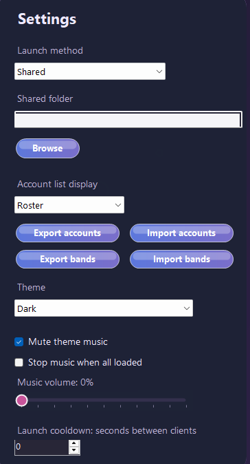

XIVLauncher Accounts
Use shared or instanced launch modes for XIVLauncher account lists and profile folders.
FFXIV / FF14 XIVLauncher utility
A polished Windows launcher for Final Fantasy XIV players who manage multiple XIVLauncher accounts, bands, portraits, and multibox client launches.

Potato Launcher focuses on the boring-but-important parts of multibox management: starting the right accounts, keeping bands organized, and watching client resource usage.
Use shared or instanced launch modes for XIVLauncher account lists and profile folders.
Create bands of accounts and launch them in sequence with cooldown and initialization-wait controls.
Monitor FFXIV clients with CPU, GPU, memory, affinity, and RAM optimization tools.
Link characters to Lodestone profiles and refresh portraits for a visual account roster.
Settings, bands, account order, and portrait cache live in %APPDATA%\Potato Launcher.
Download a setup executable from GitHub Releases and choose where Potato Launcher is installed.
The app keeps launch controls, rosters, settings, and optimizer monitoring close without turning the workflow into a maze.


Public screenshots are sanitized: account names, character names, and local paths are hidden before publishing.
Get the latest Windows installer or portable zip from the GitHub Releases page. The installer preserves app data in %APPDATA%\Potato Launcher between updates.